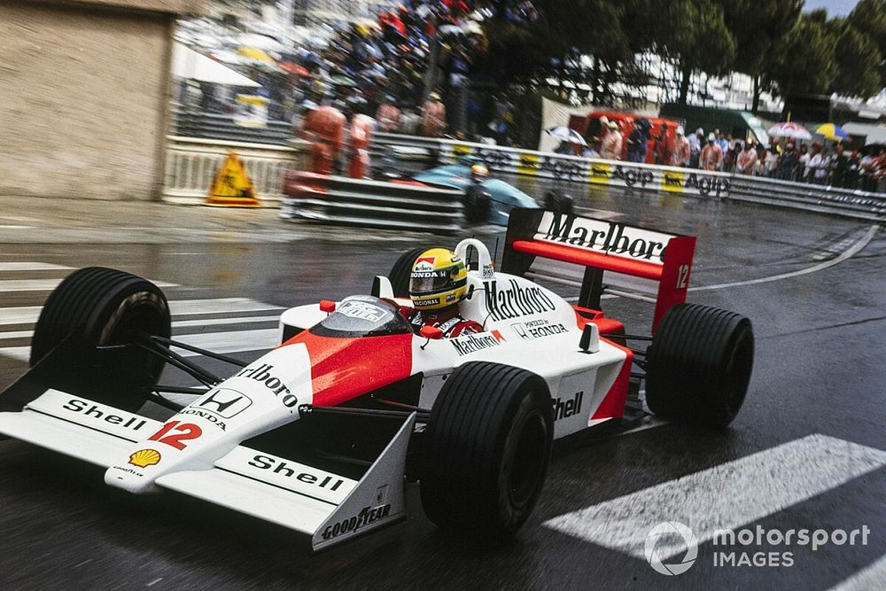

My Odin Project
About Us
Contact
Store
Most iconic circuit in Formula 1!
Monaco is without a doubt the circuit that everyone knows, even outside F1!
Iconic F1 cars.
Lotus E21, used in the 2013 season by Kimi Raikkonen, elegant and powerful.

McLaren MP4/4 driven by Ayrton Senna in 1988 in Monaco.
McLaren MP4-15 driven by Mika Hakkinen in 2000
"We have to remember these days. There is no guarantee they will last forever. Enjoy them as long as they last."
-Sebastian Vettel, F1 Driver
Be always updated with the exciting world of racing!
Sign up to recieve news about F1 by clicking that button right over there!
Sign up
 17.13.30.png)